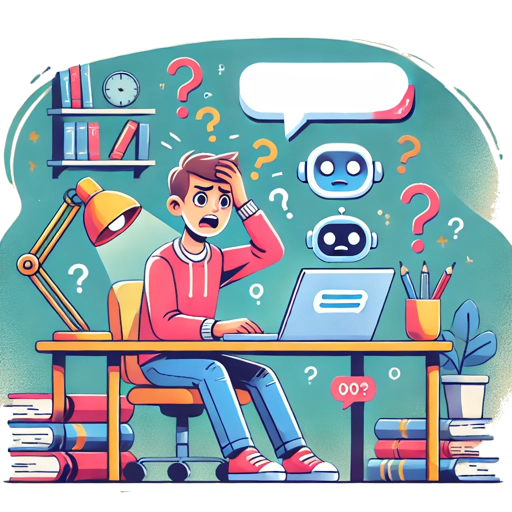

Előnyös vagy hátrányos teljesen megbízni a ChatGPT-ben a tanulás során?
Bevezetés
Mi a ChatGPT, és hogyan segíthet a tanulásban?
A ChatGPT egy mesterséges intelligencia alapú nyelvi modell, amelyet az OpenAI fejlesztett ki. Képes természetes nyelven kommunikálni, kérdésekre válaszolni, információt nyújtani, és támogatást adni különböző témákban. A tanulás során egyedülálló segítséget nyújthat, hiszen gyors és könnyen érthető válaszokat ad, miközben interaktív párbeszéden keresztül mélyíti a tudást.
Előnyök
Miért lehet előnyös használni a ChatGPT-t a tanulás során?
A ChatGPT rendkívül sokoldalú eszközként szolgálhat a tanulásban, különösen, ha gyors, hatékony és személyre szabott segítségre van szükség. Akár egy komplex téma megértéséhez, akár egy idegen nyelv elsajátításához keresel megoldást, a ChatGPT képes válaszolni kérdéseidre, és útmutatást adni. Mindezek mellett olyan kreatív ötletekkel is szolgálhat, amelyek projektjeid vagy prezentációid során hasznosak lehetnek.
Most nézzük meg, miért is érdemes a ChatGPT-t használni a tanulási folyamatokban!
Előny
Részletek
Gyors információszerzés
Bonyolult témákban is azonnal érthető válaszokat nyújt.
Személyre szabott tanulás
A kérdések alapján egyedi, személyre szabott támogatást ad.
Több nyelven elérhető
Idegen nyelvek tanulásában és fordításban is kiváló segítség.
Kreatív ötletek generálása
Projektekhez, esszékhez vagy prezentációkhoz ötletekkel szolgálhat.
24/7 elérhetőség
Bármikor elérhető, így időbeli korlátok nélkül használható.
Hátrányok
Miért nem mindig megbízható forrás a ChatGPT?
Bár a ChatGPT rengeteg előnnyel rendelkezik és hatékonyan segíthet a tanulásban, fontos figyelembe venni, hogy vannak olyan tényezők, amelyek korlátozhatják a megbízhatóságát és pontosságát. A mesterséges intelligencia alapú rendszereknek saját határaik vannak, és nem mindig képesek biztosítani a 100%-os pontosságot vagy friss információkat. Nézzük meg, milyen hátrányokkal találkozhatunk a ChatGPT használatakor!
Hátrány
Részletek
Pontatlanság lehetősége
Előfordulhat, hogy téves vagy hiányos információt ad.
Forrásmegjelölés hiánya
Némely információ forrása nem tüntethető fel.
Túlzott általánosítás
Néha nem elég részletes, vagy nem alkalmazható minden helyzetben.
Nem friss adatok
A modell ismeretei korlátozottak lehetnek, különösen az újabb eseményekről.
Emberi visszajelzés hiánya
Nem képes érzelmi intelligenciát nyújtani, ami a tanulói motivációban segíthet.

Összegzés
A ChatGPT kétségtelenül hatékony eszközként jelenik meg a modern tanulási folyamatokban. Képes gyors, érthető válaszokkal segíteni, miközben lehetőséget biztosít a mélyebb ismeretek elsajátítására is. Az eszköz előnyei közé tartozik a gyors információszerzés, a személyre szabott tanulás, valamint a bármikor elérhetőség, amely ideálissá teszi a folyamatos tanulásra. A kreatív gondolkodás ösztönzése és az interaktív tanulás segíti a tanulókat a feladatok hatékonyabb megoldásában.
Ugyanakkor a ChatGPT használatának korlátai is vannak, amikre nem árt odafigyelni. Bár gyors válaszokat ad, azok nem mindig pontosak, és az eszköz nem képes hiteles forrást biztosítani az információkhoz. Ezen kívül nem rendelkezik az emberi érzékenységgel vagy motiváló erejű visszajelzésekkel, ami a tanulási folyamatban különösen fontos. A ChatGPT tehát önállóan nem helyettesítheti a mélyebb kutatást, a kritikusan gondolkodó hozzáállást, vagy a tanár diák közötti interakciót.A legjobb eredményeket akkor érhetjük el, ha tudatosan integráljuk a
ChatGPT-t a hagyományos tanulási metodikákba, kihasználva az eszköz előnyeit, ugyanakkor figyelmesen kezelve a korlátaikat. A jövő tanulási módszereiben az ilyen mesterséges intelligencia-alapú segédeszközök mellett nem szabad elfelejteni a személyes tanulást, a kutatást és a tapasztalati tanulást sem. Így a ChatGPT valóban értékes kiegészítő eszközzé válhat a tudás mélyítésében, ha okosan használjuk.